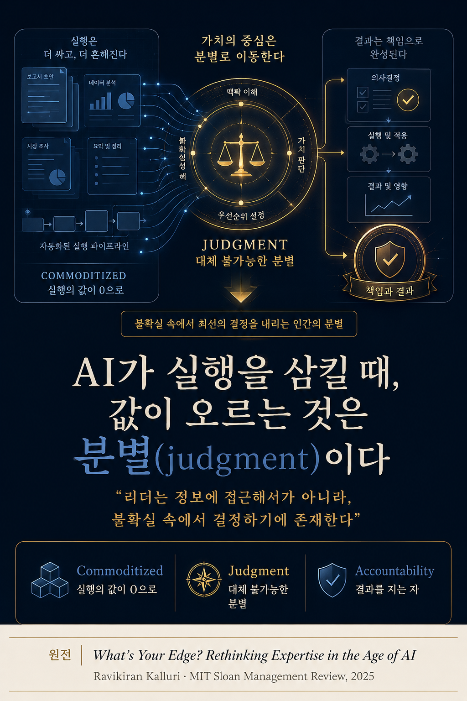

이 글에서 '분별'은 단순한 '의사결정'이 아니다. 수많은 선택지 가운데 무엇이 정말 할 가치가 있는지를 가려내고, 정보가 불완전하고 결과가 불확실한 상황에서 그 결정의 무게와 책임을 스스로 짊어지는 인간의 능력을 말한다. AI가 대신할 수 있는 '실행'이나 '정보 종합'과는 구별되는, 맥락을 읽어 값을 매기는 판단력이다.
Section Ⅰ · Execution Is Now Free실행이 공짜가 되었다
해자가 마르고 있다,
실행이라는 이름의 해자가
오랫동안 조직의 해자(垓字)는 '실행'이었다. 남들보다 빠르고 정확하게 일을 해내는 능력, 즉 보고서를 쓰고 데이터를 분석하고 첫 번째 안을 만들어 내는 힘이 곧 경쟁 우위였다.
그 해자가 지금 마르고 있다. 생성형 AI는 유능한 실행을 인간 팀이 따라올 수 없는 속도와 일관성으로 순식간에 만들어 낸다. 한때 회사를 돋보이게 하던 산출물, 곧 리포트와 분석과 초안 사고는 이제 누구나 즉시, 거의 공짜로 얻을 수 있는 '기본값(table stakes)'이 되었다.
숫자는 이 전환의 규모를 말한다. 맥킨지는 생성형 AI가 오늘날 직원 노동시간의 60~70%를 차지하는 업무를 자동화할 잠재력을 가진다고 본다. 더 서늘한 것은 자동화가 단순 업무에 머물지 않는다는 점이다. '전문성의 적용(application of expertise)'을 자동화할 기술적 잠재력은 34%포인트 뛰었고, '관리와 인재 육성'을 자동화할 잠재력은 2017년 16%에서 2023년 49%로 올랐다. 판단에 가장 가깝다고 여겨지던 영역까지 기계의 사정권에 들어온 것이다.
여기서 가치의 역전이 일어난다. 모두가 실행할 수 있게 되면, 실행은 더 이상 차별점이 아니다. 희소한 자원은 '얼마나 빨리 해내는가'에서 '애초에 무엇을 할 가치가 있는가'로 옮겨 간다. 스무 개의 방해 요소 속에서 정말 중요한 하나의 제약을 알아보는 눈, 그것이 새로운 프리미엄이다.
Section Ⅱ · Three Shifts전문성의 세 가지 전환
내용을 아는 힘에서,
맥락을 가리는 힘으로
노스이스턴대의 라비키란 칼루리(Ravikiran Kalluri)는 AI 시대에 전문성의 값이 '내용을 전달하는 힘'에서 '맥락을 판단하는 힘'으로 옮겨 간다고 말한다. 그는 세 가지 전환을 제시한다.
"리더는 정보에 접근할 수 있어서 보수를 받는 것이 아니다. 진짜 위험이 걸려 있고 결과가 불확실할 때, 결정을 내리기에 보수를 받는다."Leaders aren't paid because they can access information; they're paid to make decisions when the stakes are real and the outcomes are uncertain. — Ravikiran Kalluri, MIT Sloan Management Review
Section Ⅲ · The Weight of Consequence결과를 지는 자
도구가 강해질수록,
인간의 몫은 더 선명해진다
하버드의 '리더스 어젠다(2026)'는 같은 결론에 다른 언어로 도달한다. AI가 데이터 처리에서 아무리 앞서가도, 도덕적 판단·상상력·직관은 대체되지 않으며 오히려 조직을 가르는 결정적 차이가 된다는 것이다.
"더 강력한 도구와 더 큰 데이터가 퍼질수록, 의사결정에서 '인간적인 요소'는 오히려 더 큰 차별점이 될 것이다."The spread of more powerful tools and larger datasets will likely make the human elements of decision-making more differentiating. — Martin Reeves 외, Harvard Business Impact
책임(accountability), 신뢰(trust), 도덕적 판단. 이것들은 자동화할 수 없는, 근본적으로 인간의 몫이다. 그러나 여기엔 냉정한 조건이 붙는다. AI는 돈을 쓴다고 저절로 가치를 주지 않는다. 가치는 리더가 조직과 팀을 바꿔 낼 새로운 역량을 갖출 때 비로소 나온다. 에르미니아 이바라와 마이클 야코비데스는 그 역량을 다섯으로 정리한다.
역설은 지금 벌어진다. 분별이 가장 희소하고 값진 자원이 되는 바로 그 순간, 많은 조직은 효율의 이름으로 관리층을 걷어내며 그 능력을 스스로 뜯어내고 있다. 가장 비싸질 것을 가장 먼저 버리는 실수다.
AI가 인간다움을 더 선명하게 만들고(Vol. 07), 그 인간다움의 토대인 두뇌를 전략 자산으로 다뤄야 한다면(Vol. 08), 그 두뇌가 하는 가장 인간적인 일이 바로 분별이다. 무엇을 할 가치가 있는지 가려내고, 그 결과를 짊어지는 것. AI 시대 리더의 값은 거기에 있다.